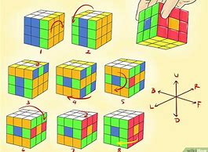
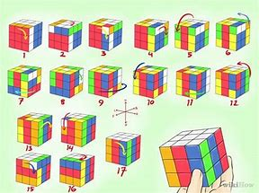
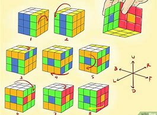
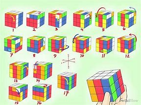
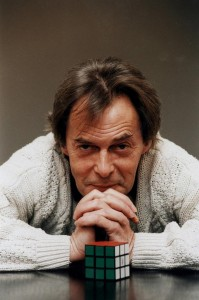
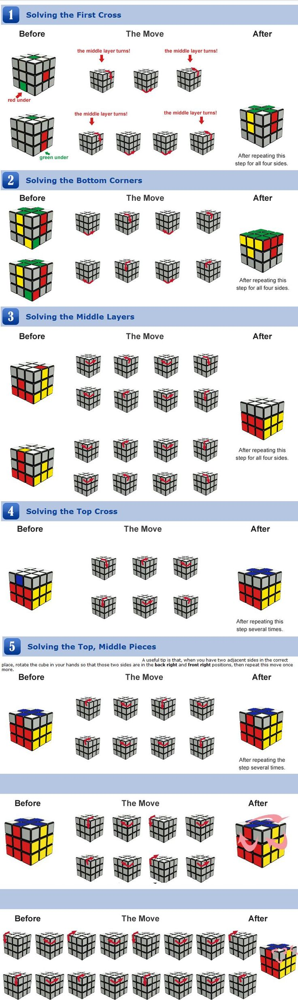
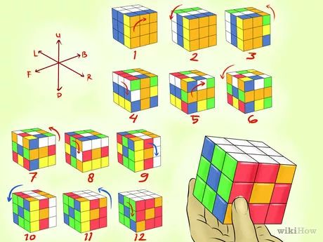
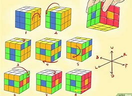
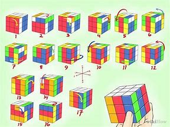

Je m'appelle Leo, bienvenue sur mon site web
Le Rubik’s Cube est inventé le 19 mai 1974 par Ernő Rubik1, un sculpteur et professeur d’architecture hongrois, qui s’intéresse à la géométrie et à l’étude des formes en 3D. Ernő Rubik obtient en 1976 le brevet hongrois HU170062 pour le « Magic Cube2 », mais ne demande pas de brevet international. Le produit est testé en 1977, et les premiers cubes se vendent peu après dans les boutiques de jouets de Budapest. L’idée initiale d’Ernő Rubik était de construire un cube afin d’amener ses étudiants à deviner quel était son mécanisme interne, comment les petits cubes pouvaient tourner suivant trois axes tout en restant solidaires, et ainsi de les intéresser à la géométrie en 3 dimensions1. Ce n’est qu’ensuite qu’il eut l’idée (grâce à la suggestion d’un ami) de colorer chaque face d’une couleur différente constatant alors qu’après mélange, l’ordre initial du cube s’avérait extrêmement difficile à retrouver (une chance sur 43 252 003 274 489 856 000 à chaque rotation). Il eut alors l’idée de le commercialiser en tant que « casse-tête » géométrique et mathématique. En Hongrie, le cube gagne en popularité par le bouche-à-oreille, et est bientôt connu dans toute l’Europe. En septembre 1979, à l'instigation de Bernard Farkas3, un accord est signé avec Ideal Toys pour distribuer le cube mondialement. Ideal Toys renomme alors le cube « Rubik’s Cube » et les premiers exemplaires sont exportés de Hongrie vers mai 1980, en direction de Londres, de New York et de Paris.
Aujourd’hui, le Rubik’s Cube est copié sous licence par de nombreux distributeurs par le monde. Il est distribué par Win Games en France et par Jumbo en Belgique. Le Rubik’s Cube atteint son maximum de popularité au début des années 1980. Plus de 100 millions de cubes sont vendus entre 1980 et 19824,h 1. Le « Rubik’s Cube » gagne le prix des distributeurs de jouets britanniques en 1980 et de nouveau en 19815. De nombreux jeux similaires sont distribués peu de temps après le Rubik’s Cube, notamment le « Rubik's Revenge », une version 4×4×4 du Rubik’s Cube. Il existe aussi une version 2×2×2 et 5×5×5 (connus respectivement sous les noms de « Pocket Cube » et de « Professor's Cube »), et des versions dans d’autres formes, comme la pyramide ou le dodécaèdre régulier (1212). Depuis juin 2008, la marque V-Cube vend les modèles en 6×6×6, 7×7×7 et 8×8×8. En 1981, Patrick Bossert, écolier britannique de douze ans, publie sa solution détaillée. You can do the cube s'est vendu à 1,5 million d’exemplaires à travers le monde6, dans 17 éditions différentes. Il est numéro 1 des best-sellers du Times et du New York Times en 1981. Le 10 novembre 2016, la Cour de justice de l'UE annule l'enregistrement en tant que marque européenne de la forme du Rubik's cube, considérant que cet enregistrement protège non pas une marque mais une « solution technique », à savoir la capacité de rotation des faces du cube, qui dépend d'un brevet plutôt que d'une marque.
Le Rubik’s Cube est un cube dont chaque face est divisée en neuf cubes miniatures qui peuvent tourner indépendamment les uns des autres. En fait le cube est composé d’un axe central portant les centres des 6 faces, de 8 cubes de coin à 3 faces visibles et de 12 cubes d’arête à 2 faces visibles. À l’état final, chaque face du cube de Rubik est d’une couleur homogène et différente des autres, mais la rotation indépendante de chaque face provoque un mélange des petits cubes de coin et d’arête. Le but du jeu est, après avoir mélangé les six faces, de manipuler le cube pour tenter de lui rendre son apparence d’origine, avec les six faces de couleurs unies. Les couleurs des faces du cube original sont : blanc en face de jaune, vert en face de bleu, orange en face de rouge. Sur les versions non originales, les positions relatives des faces de couleurs et même parfois les couleurs peuvent changer. Il en est sorti de nombreuses variantes de forme et de décoration (voir la section Variantes). La pratique qui consiste à résoudre le Rubik’s Cube le plus rapidement possible est le speedcubing. En utilisant la méthode la plus simple, on peut y arriver en moins d'une minute avec suffisamment d’entraînementh 2. Les meilleurs le font en moins de dix secondes.
C’est la plus intuitive et la plus simple à mettre en œuvre. La résolution nécessite en moyenne un
peu plus de 185 mouvements :
Réaliser une face, par exemple la face supérieure blanche, en prenant bien soin de placer
correctement la couronne (placer les cubes entourant cette face) et les cubes centraux (bleu,
orange, vert et rouge),puis la deuxième couronne (la rangée horizontale à mi-hauteur),
déplacer les cubes-arête de la face du bas à leur place et les orienter correctement,
déplacer les cubes-sommet à leur place,
enfin les orienter.
Chaque opération (tourner une arête ou un sommet, échanger deux arêtes ou deux sommets) pourra
être réalisée deux fois, après avoir placé les cubes concernés sur la même face, et en prenant
soin de ne pas modifier cette face pendant l'opération. La première exécution mélange le reste
du cube, mais en tournant alors la face d'un quart ou d'un demi-tour pour placer le(s) sujet
(s) de la deuxième opération au même endroit relativement au reste du cube et en refaisant
l'opération à l'envers, on réalisera la deuxième opération tout en remettant le reste du cube en
place1



